Инструкция по Proofreader
Этапы работы над книгой
Работа над книгой проходит в несколько этапов:
- Вычитка
- Форматирование
- Проверка
Вычитка
Прежде всего исправьте опечатки распознавания: неверные буквы и лишние или недостающие знаки препинания.
Абзацы разделяются пустой строкой. Не нужно форматировать их дополнительно, например, добавлять пробелы. Просто разделяйте абзацы пустой строкой.
Пример, так правильно:
Истина мертвая становится врагом истины живой, развивающейся».
Очевидно, история научного познания предстанет в ее действительном обогащенном содержании тогда и только тогда, когда...
Так неправильно:
Истина мертвая становится врагом истины живой, развивающейся».
Очевидно, история научного познания предстанет в ее действительном обогащенном содержании тогда и только тогда, когда...
Удаляйте лишние переводы строк, внутри абзаца не должно быть переводов строк. Один абзац — одна строка.
Пример, так правильно:
Реальный познавательный процесс не свободен от заблуждений. Поэтому научная разработка теории познания должна включать в себя и анализ заблуждений, имеющих место в познавательном процессе. Мы говорим об этом потому, что без исследования связи познания с заблуждением не является достаточно полным и само понимание истины.
Так неправильно:
Реальный познавательный процесс не свободен от заблуждений.
Поэтому научная разработка теории познания должна включать в себя и анализ заблуждений, имеющих место в познавательном процессе.
Мы говорим об этом потому, что без исследования связи познания с заблуждением не является достаточно полным и само понимание истины..
Кнопка «Улучшить форматирование» в верхней части экрана автоматизирует форматирование. После автоматической оцифровки каждый абзац разделен на строки, а между абзацами есть дополнительный перевод строки:
Еще больший момент приблизительности в сравне-
нии с ощущениями содержат восприятия и представле-
ния. Как показывают исследования, при восприятии
происходит процесс соотнесения конкретно воспринима-
емого предмета с образом в сознании. Эта процедура
носит вероятностный характер и осуществляется по
мере ознакомления воспринимающего с признаками
предмета.
Относительность, приблизительность отражения воз-
растают в случаях, когда субъект встречается с незна-
комым предметом или признаками его.
После нажатия кнопки строки одного абзаца автоматически соединятся в одну.
Еще больший момент приблизительности в сравне- нии с ощущениями содержат восприятия и представле- ния. Как показывают исследования, при восприятии происходит процесс соотнесения конкретно воспринима- емого предмета с образом в сознании. Эта процедура носит вероятностный характер и осуществляется по мере ознакомления воспринимающего с признаками предмета.
Относительность, приблизительность отражения воз- растают в случаях, когда субъект встречается с незна- комым предметом или признаками его.
После этого останется правильно соединить слова которые переносились на следующую строку: представле- ния и воспринима- емого. В будущем, это, возможно, будет автоматизировано.
Не оставляйте номер страницы, удалите его из текста и внесите его в поле Номер страницы в книге.
Форматирование
На этапе форматирования текст книги приводится в соответствие формату Comtext.
Проверка
Финальная проверка текста.
Пример работы в Proofreader
Пример вычитки одной страницы по шагам.
Откройте в браузере страницу входа в Proofreader.
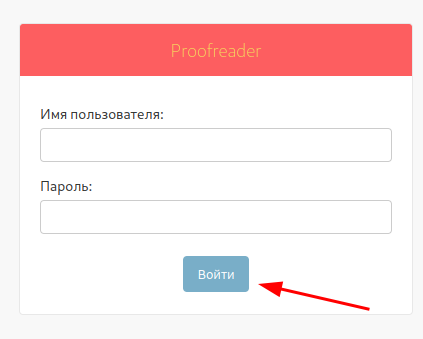
Введите Имя пользователя и Пароль, затем нажмите кнопку Войти.
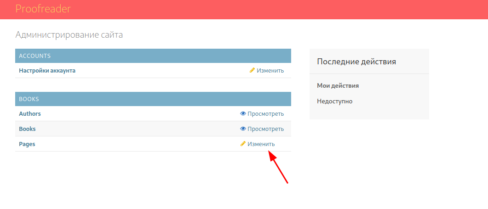
Откройте список страниц книг, для этого нажмите на кнопку Изменить в строке Pages.
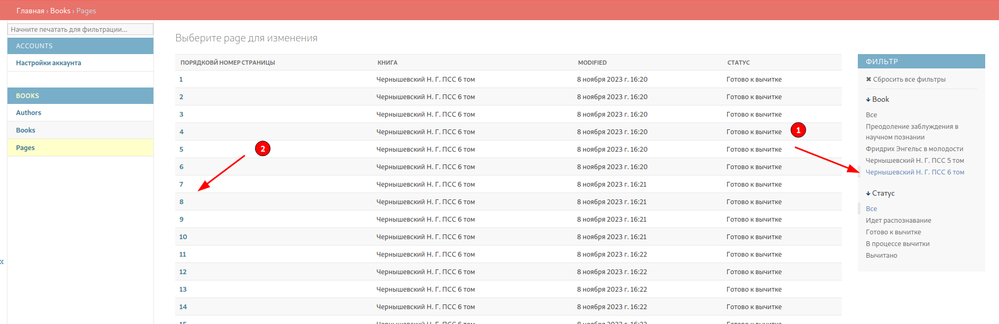
В правом меню выберите нужную книгу (1), после этого в таблице, в центре экрана, останутся только страницы выбранной книги. Затем выберите нужную страницу (2).
Чтобы распознанный текст книги и изображение страницы находились на одной высоте закройте левое меню с помощью сплиттера:
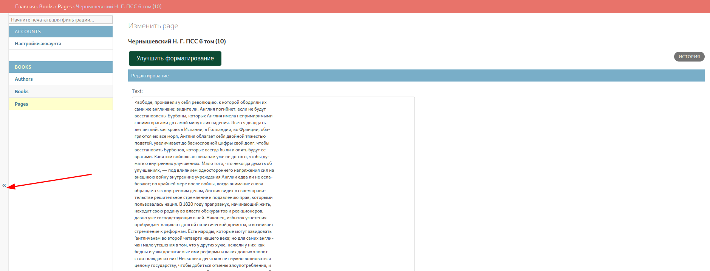
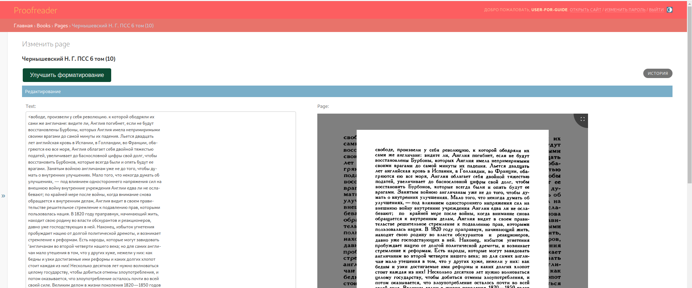
Чтобы вручную не удалять лишние переводы строк нажмите кнопку Улучшить форматирование. После этого абзацы склеятся в одну строку.
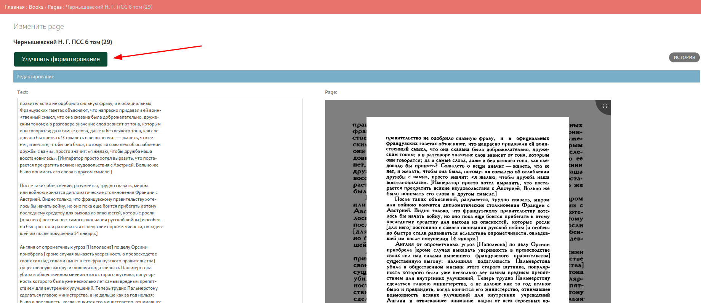
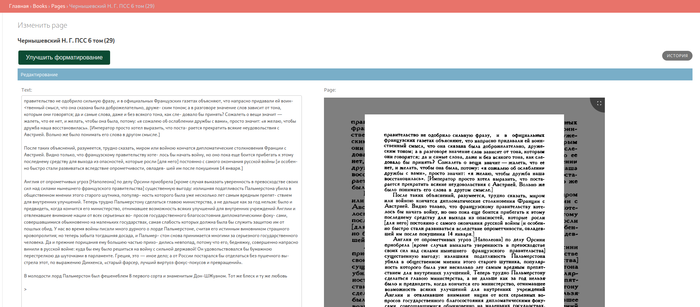
Исправьте опечатки в тексте книги, сверяясь с изображением страницы.
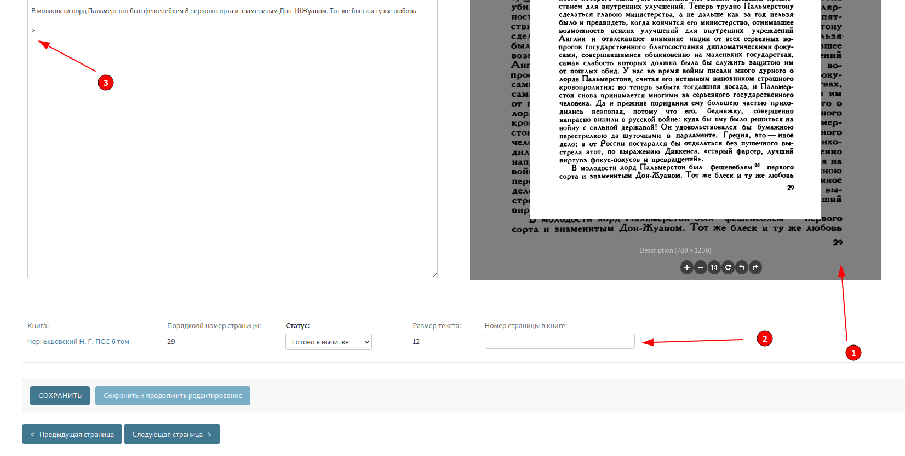
Запишите номер страницы из книги (1) в поле Номер страницы в книге (2) и удалите номер из текста страницы (3).
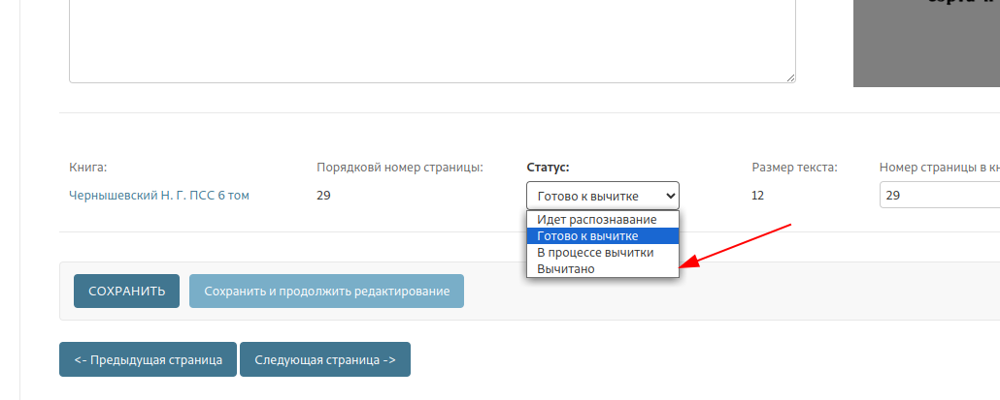
Установите статус Форматирование.
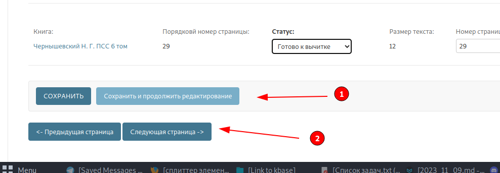
Нажмите кнопки Сохранить и продолжить редактирование (1), а затем Следующая страница (2).
Статусы
Статусы страниц
Каждая страница книги находится в одном из статусов.
Распознавание— после добавления книги этот статус выставляется автоматически, в время распознавания происходит оцифровка изображения страницы и перевод его в текст.Распознано— после завершения распознавания текста, автоматически выставляется статусРаспознано.Вычитка— на этом этапе редакторы устраняют в книге ошибки автоматического распознавания. После того как ошибки устранены книга переводится в следующий статус —Форматирование.Форматирование— на этом этапе редакторы форматируют книгу в формате Comtext. После того как ошибки устранены книга переводится в следующий статус —Проверка.Проверка— проверка корректности вычитки и форматирования. После проверки страница переводится в статусЗавершеноЗавершено— окончательный статус страницы. Однако, при нахождении новых опечаток ничего не мешает исправить их, даже если книга находится в этом статусе.
Статусы книг
Каждая книга находится в одном из трех состояний.
Распознавание— статус автоматически выставляется после добавление книги и так же автоматически книга переходит в следующий статусВычиткапосле завершения распознавания всех страниц.Вычитка— основной этап работы над книгой. Книга переходит в следующее состояниеЗавершенокогда все страницы книги в статусеЗавершено.Завершено— окончательное состояние книги.
Функции
Восстановление страницы из истории
Для восстановления предыдущей версии страницы из истории, нажмите на кнопку «История» в верхней части формы редактирования страницы.
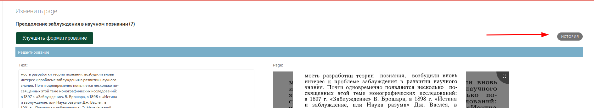
Найдите нужную версию и прейдите по ссылке на эту версию.
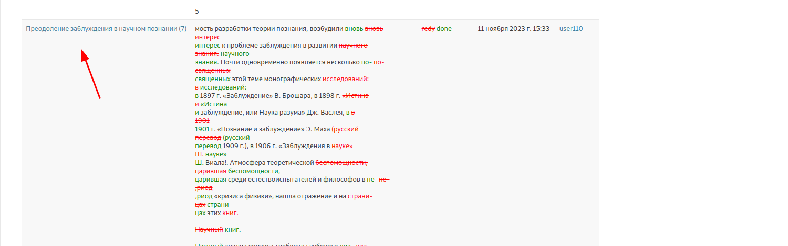
Нажмите на кнопку «Восстановить» внизу страницы.
Настройки
Настройки находятся в разделе «Настройки аккаунта»
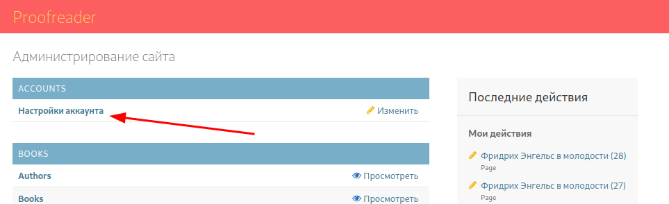
Параметр «Размер текста» определяет размер текста в редакторе на странице книги.
Группы пользователей
Сейчас в Proofreader четыре группы пользователей
- Читатель — могут просматривать авторов, книги и страницы, но не могут редактировать.
- Корректор — могут просматривать авторов, книги и страницы, а так же редактировать страницы. При редактировании страниц доступны следующие статусы:
Распознано,Вычитка,Форматирование. В этой группе находятся пользователи после регистрации. - Редактор — могут просматривать авторов, книги и страницы, а так же редактировать страницы. При редактировании страниц доступны все статусы.
- Администраторы — занимаются настройкой системы и загрузкой книг.
Менять группу пользователя могут только администраторы. Для изменения группы пользователя перейдите в пункт «Пользователи» и выберите пользователя.
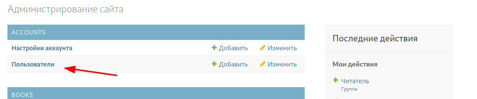
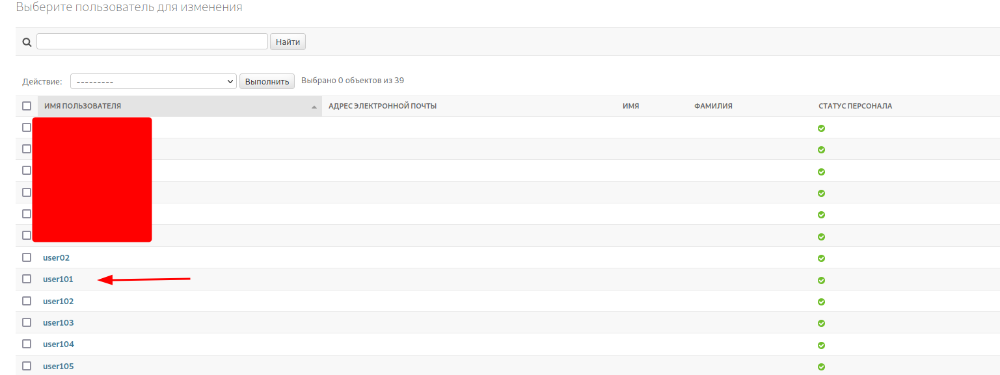
В разделе «Права доступа» установите пользователю нужную группу.
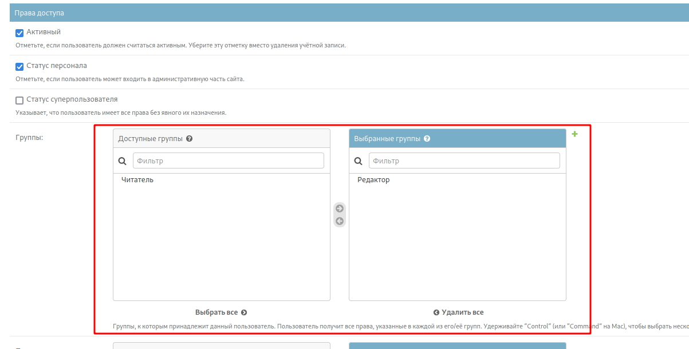